Soul styles
The red block's soul flying from a reached goal to the next red block, in the game: a goal reached on a small board, its finish skipped with a tap, then filmed frame by frame (test/experiments/soul-look.mjs). Each style is in the game behind ?soul=<name>; the game still uses Classic. The new red block shows muted while the soul is on its way; the red band at the right edge points to its target, off screen.
Suggestions
- Smaller: every new style's head is about a third of a cell; Classic's glow is nearly two cells across.
- A trail shows where it came from and makes the motion readable: Ember (short ribbon) or Comet (long streak) do this most clearly.
- One thin ring on landing instead of two wide ones, and a lighter flash.
- My pick: Ember, maybe with Comet's longer streak: it stays red and flat like the blocks, and is easy to follow.
Classic (now)
The orb as it is: a large red glow (about 1.8 cells across with its halo) that lifts out of the block as a ghost, flies with a glow tail and falling stars, and pours into the new block; two wide rings go out.
Big and soft: it covers the blocks it passes and reads as a blur rather than a thing. The halo is most of what you see.
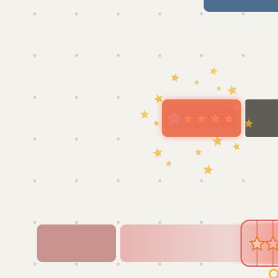
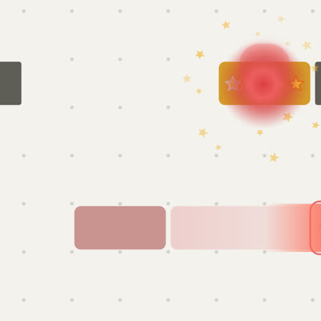
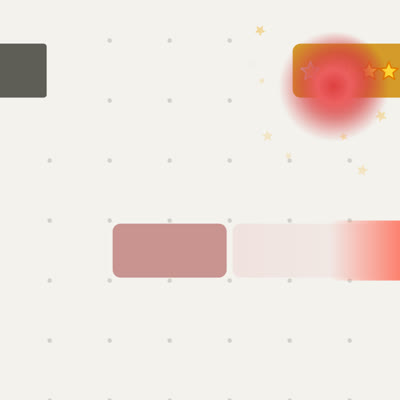
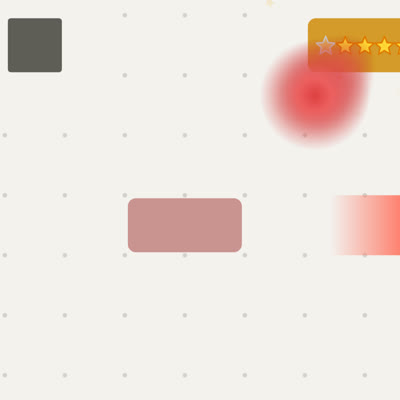
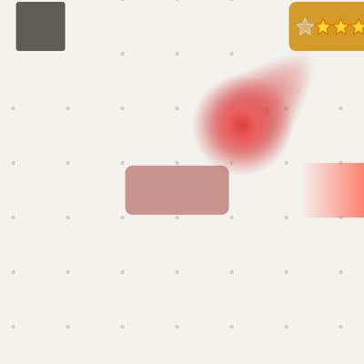
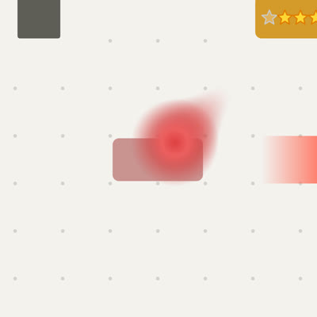
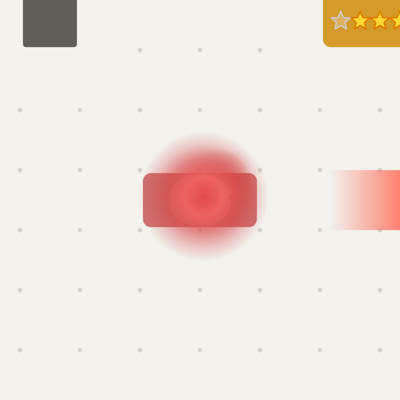
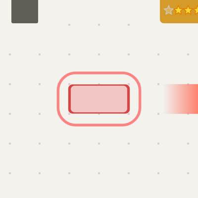
Ember
A small solid red ball (a third of a cell) with a light spot, a soft red glow, and a red ribbon behind it that thins and fades. One thin ring as it lands.
Small and clear; the ribbon shows where it came from. Plain, close to the game's flat style.
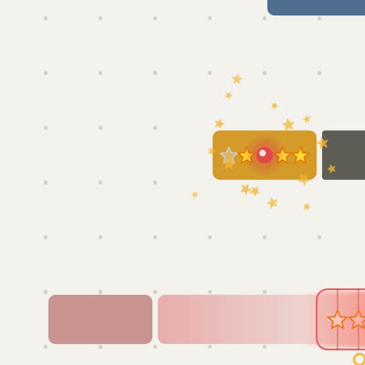
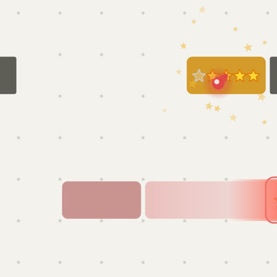
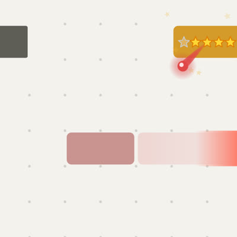
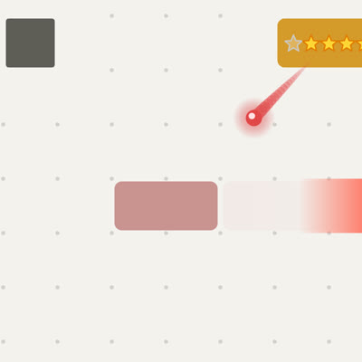
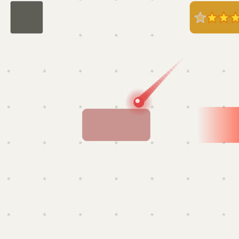
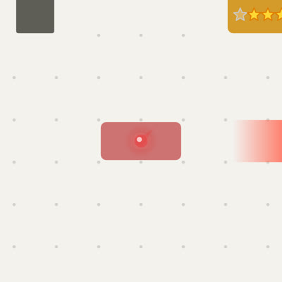

Comet
A white-hot point in a red halo, with a long streak behind it going from pale pink to red, and a few sparks drifting off.
The most motion: the long streak reads well even at a glance or zoomed out. The white core is less 'red block'.

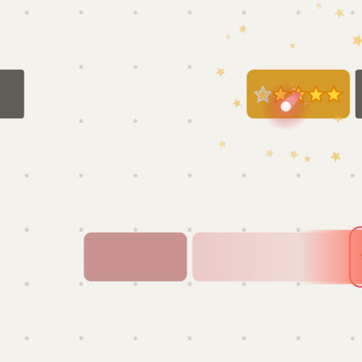


Gold star
A spinning gold star (the score's star), shedding small gold and pink stars that drop behind it. A gold ring as it lands.
Ties the soul to the stars just won; busier, and gold rather than red.
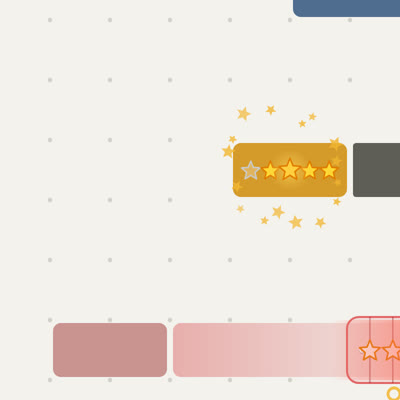
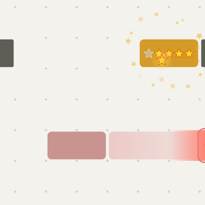
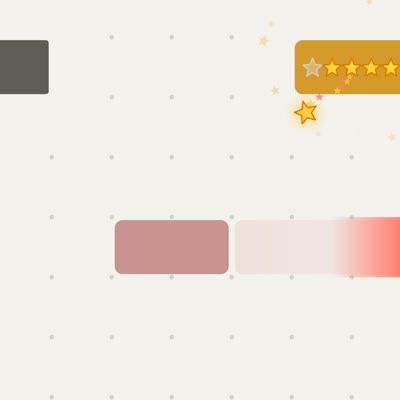
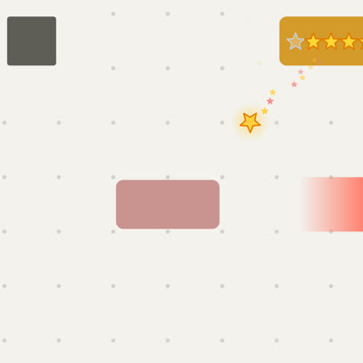
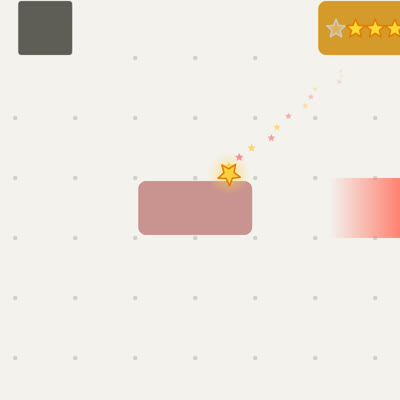
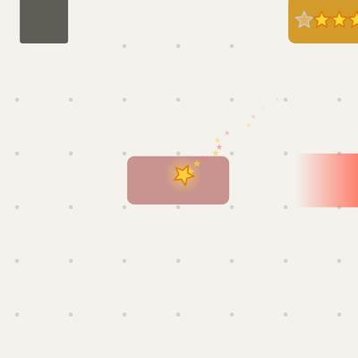
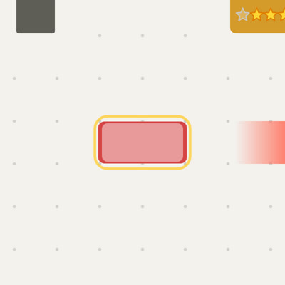
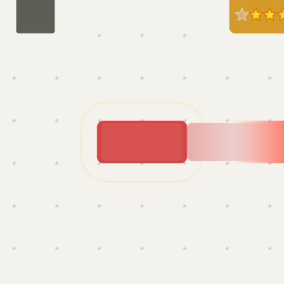
Ghost block
The red block itself in small (its shape kept), with fading copies of itself behind it like motion blur.
The most literal: the block moves on. The stepped copies look a little mechanical.
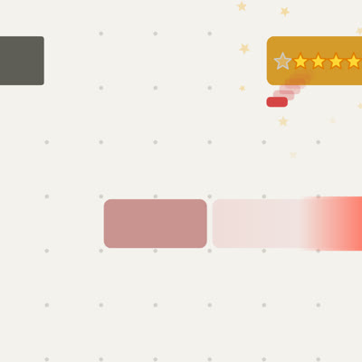
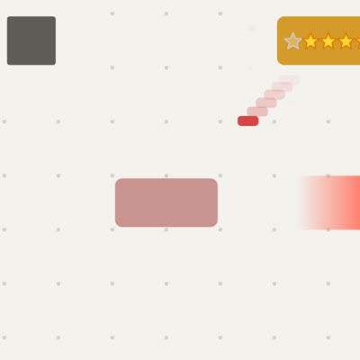
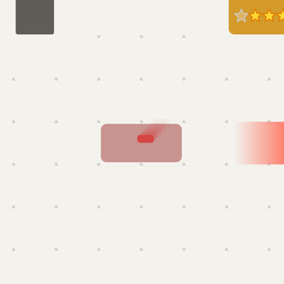
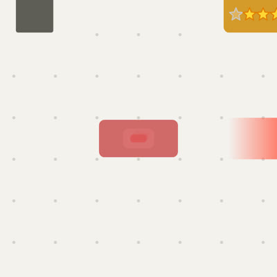